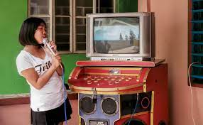
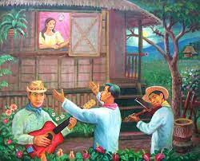
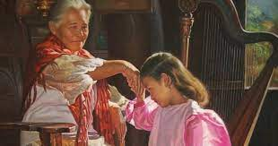
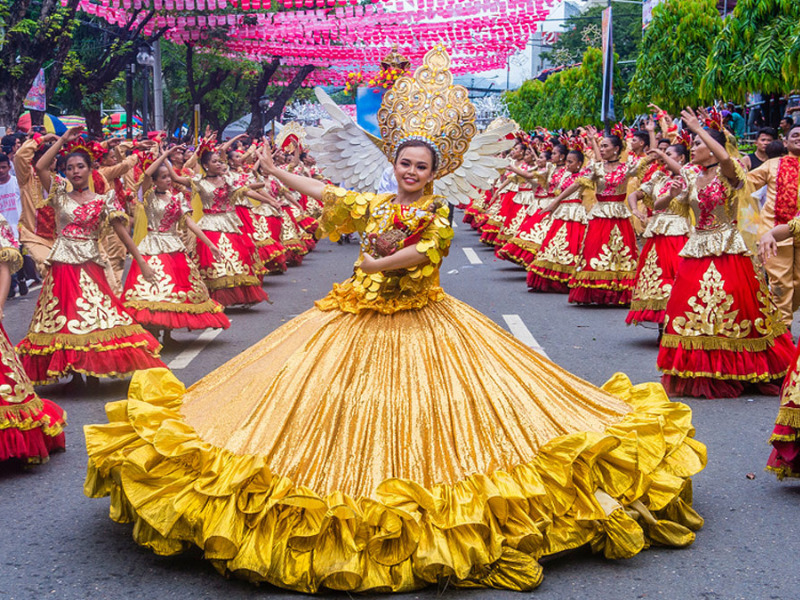
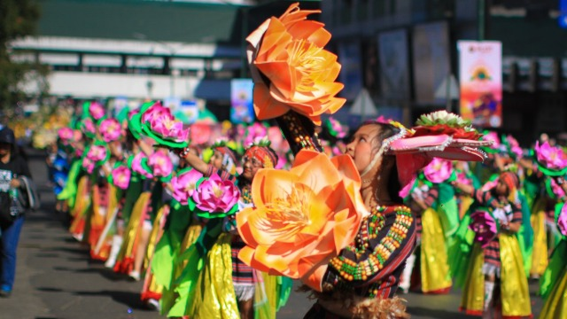
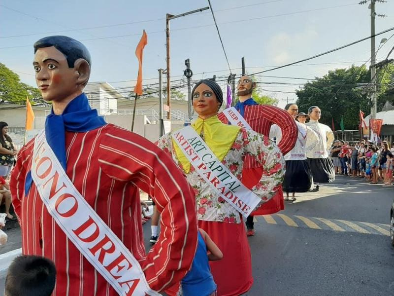
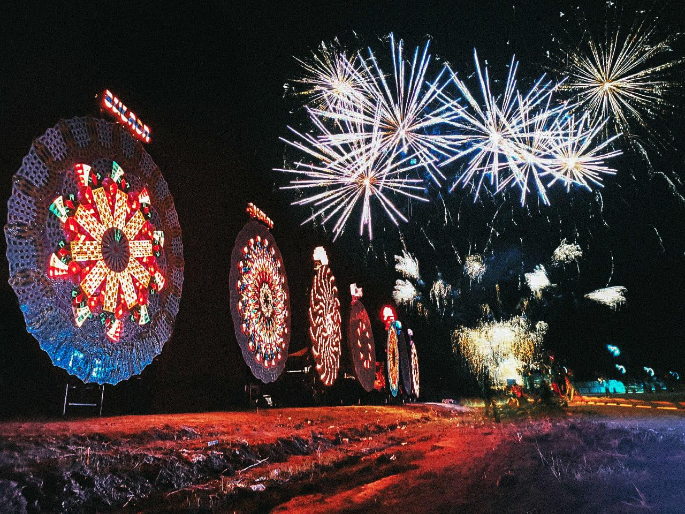
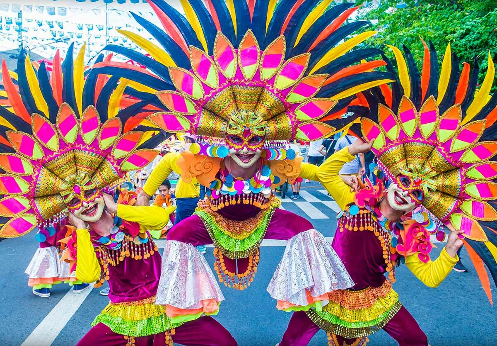
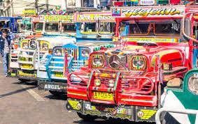
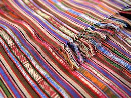

Explore the rich cultures, vibrant festivals, and unique traditions of the Philippines.
Learn about the diverse cultures that make up the Philippines.
Traditional Karaoke Session
Harana - Traditional Serenade
Mano Po - Traditional Gesture of Respect
Experience the joy and excitement of Philippine festivals.
Sinulog Festival - Cebu (means " graceful dance" started at 1980 with a simple dance that represents the "sulo" or current of river in Cebu
Panagbenga Festival - Baguio(Often referred as Baguio Flower Festival is a long month celebration that runs from february to march started in 1996
Higantes Festival - Angono(around the late 1800s, where the wealthy ruling class who ruled Angono as their hacienda strictly prohibited the common people from celebrating, except for one single festival in the entire year).
Lantern Festival - Pampanga(The Lantern Festival may originate as far back as the Han dynasty (206 bce to 220 ce), when Buddhist monks would light lanterns on the 15th day of the lunar year in honour of the Buddha.)
Masskara Festival - Bacolod(The Festival first began in 1980. The province relied on sugar cane as its primary agricultural crop and the price of sugar was at an all-time low due to the introduction of sugar substitutes like high fructose corn syrup in the United States)
Discover the unique traditions passed down through generations.
Traditional vehicle-Jeepneys have been used as a mode of transportation in the Philippines since the 1950s. After World War II, American troops left several Willys Jeep in the country, which Filipinos modified and turned into bus-like vehicles that can transport passengers.
Traditional Handicraft Making-travelers will find brilliant weaves, intricate beadwork, silver tribal jewelry, rustic wood figurines and dishes, ceramic pots, jewel-colored capiz shell chandeliers, earthy pandan leaf mats and coasters, rattan basketry, and shiny brassware.